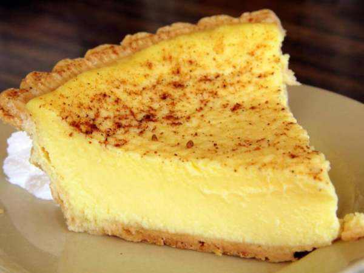

Custard tart

A rich, traditional custard tart
Wholesome and nourishing, this tart uses real eggs and cream. This is far better and more enjoyable than anything from regular bakeries.
Ingredients
Pastry
- plain flour, 225 g
- butter, 150 g
- sugar, 50 g
- eggs, 2
Custard
- cream, 600 mL
- milk, 80 mL
- egg yolks, 12
- sugar, 150 g
- vanilla extract, 1 tbsp
- nutmeg, 1
Procedure
- Combine flour and butter and then mix in sugar.
- Add an egg and knead the ensuing dough into a disc.
- After chilling the dough for 30 min, roll it to about 30 cm across.
- Drape the pastry over a greased tart tin. Press the base and sides and chill for a further 30 min.
- Blind bake the base at 180 °C for 20 min laden and then a further 5 min unladen.
- Brush the inside surface of the pastry case with an egg yolk and bake again for 5 min.
- Heat cream and milk over medium heat until it just boils.
- Whisk egg yolks with sugar and vanilla.
- Pour the hot cream and milk, in portions, into the sweetened egg yolks and continue whisking.
- Pour the hot custard into the pastry case and grate nutmeg onto the top.
- Bake the tart at 130 °C for 50 min, and until there is only a slight wobble at the centre.
- Allow the tart to cool completely before trimming excess pastry.
- Serve slices of the tart with vanilla or cinnamon ice cream.